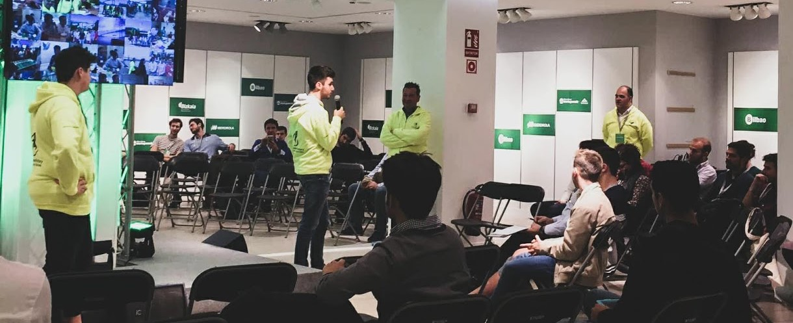
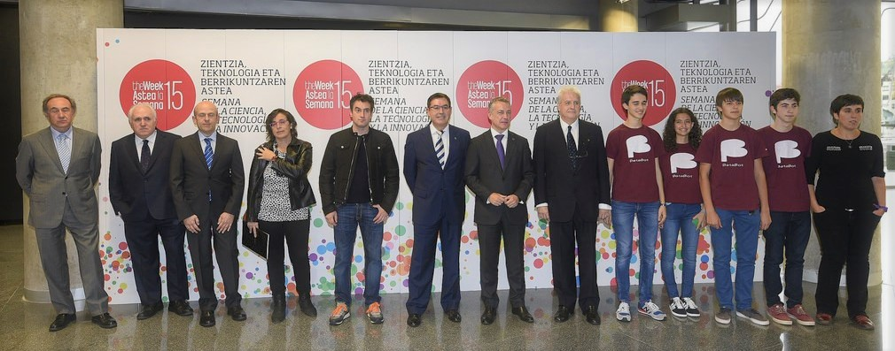
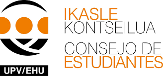

Ponencias y Actividades Voluntarias
Techstars StartrUp Week Bilbao Biscay
Una ponencia sobre el programa "Sillicon Valley Innovation and Entrepreneurship program" de la Eseune Business School MBA.
Semana de la Ciencia CTI 2015
"Ciencia y robótica" Charla impartida por Ander Aguiriano Martín, Sue González Palacios, Asier Rementería Abad y Jon Andoni Bretón Santamaría, estudiantes de Lauro ikastola y finalistas del desafío Moonbots (Google y XPrize) en la inauguración de la Semana de la Ciencia, la Tecnología y la Innovación en Euskadi celebrada en el Palacio Euskalduna de Bilbao el 2 de noviembre de 2015.
Represaentación Estudiantil
- Miembro del Consejo de Estudiantes: Cursos 2019/2020 y 2020/2021.
- Miembro de la Junta de Escuela de la Escuela de Ingeniería de Bilbao: Cursos 2019/2020 y 2020/2021.
- CM del Twitter del Consejo de Estudiantes de la Escuela de Ingeniería de Bilbao: Cursos 2018/2019, 2019/2020 y 2020/2021.
- Delegado de clase: Cursos 2017/2018, 2018/2019 y 2019/2020.
- Representante del alumnado en el Consejo de Departamento del Departamento de Física Aplicada: Cursos 2018/2019, 2019/2020 y 2020/2021.
- Representante del alumnado en el Consejo de Departamento del Departamento de Ingeniería Mecánica: Cursos 2018/2019, 2019/2020 y 2020/2021.
Jurado de Micro First Lego League
Miembro del jurado de la micro-FLL de los equipos Hikari Spirit y H20 Revolution en los años 2017 y 2018.